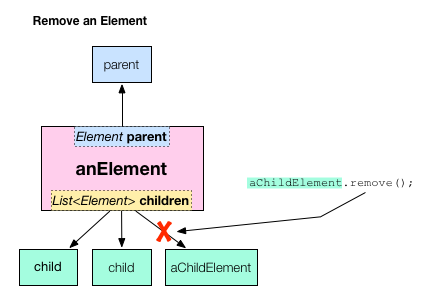

内容摘要
- Use element.remove() to remove an element from the DOM.
- Remove all children from an element with element.children.clear().
- Function expressions are a convenient way to define single-use functions.
- => is a shorthand syntax for defining functions that contain just one expression.

Remove DOM Elements
Dynamically delete items from the browser page.
This tutorial shows you how to delete elements from the DOM. A new and improved version of the todo app from the previous tutorial now allows the user to delete items from the list either one at a time, or all at once.
- Try the app
- Changing the appearance when cursor is over an element
- Removing an element from the DOM tree
- Removing all child elements from an element
- About function expressions and =>
- Other resources
- What next?
Try the app
Below is a revised version of the todo app from the previous tutorial that allows you to delete items. Stop procrastinating and remove items from your to do list.
Try it! Type in the input field and press the return key; a new item appears in the list. Enter a few more items. Point the mouse cursor at one of the items in the list; the item turns red and gets slightly larger. Click it and it disappears from the list. Use the Delete All button to remove all of the items in the list at once.
The remaining sections describe key aspects of the code added to the todo app for this tutorial. Specifically, they look at the Dart code that removes one or more elements from the DOM and the CSS code that makes the text red and larger.
Changing the appearance when cursor is over an element
As you saw, an item in the list turns red and gets bigger when the user points at it. The mouse cursor also changes shape. These visual clues are an important part of the user interface in this example because they are the only indication to the user that something will happen when the item is clicked.
This behavior is coded in the todo_with_delete app’s CSS file with this rule:
#to-do-list li:hover {
color: red;
font-size: 18px;
cursor:pointer;
}
We’ve used this CSS trick instead of providing a familiar user interface, such as a button with an ‘X’ on it, to keep the code simpler.
Removing an element from the DOM tree
An element is removed from the DOM when it is removed from its parent’s list of children. The List class provides functions for finding an item in the list and removing it. But, in this case, using the element’s remove() function is shorter and more concise than using functions from the List class.

In the todo_with_delete app, the user clicks an item to delete it. This is achieved with one line of Dart code. When a new to do item is created, the code registers a mouse click handler on the new element. When the user clicks that new element, its event handler causes the element to remove itself from the DOM with remove().

When the element removes itself from the DOM, the browser re-renders the page, and the item disappears from the to do list.
Removing all child elements from an element
When the user clicks the Delete All button, all elements are removed from the list.

In this case, using the List class’s clear() function yields the most concise code. Here’s the code from the todo_with_delete app that implements the Delete All button.
-
The HTML code creates a button with the ID delete-all. (The CSS styles it.)
<button id="delete-all" type="button" style="float:right"> Delete All </button>
-
The Dart code gets the button element from the DOM using query() and the button’s ID, #delete-all. The code registers a mouse click handler on the button; the handler removes all of the child elements from the to do list. Here is all of the Dart code related to the Delete All button.

About function expressions and =>
The todo_with_delete app uses some interesting Dart syntax when adding an event listener to the Delete All button. The argument passed into the listen() function is an example of a function expression, which is a shorthand way of defining functions and it uses the => syntax to define the function concisely.

It is equivalent to writing this:
deleteAll.onClick.listen((e) {
toDoList.children.clear();
});
or even this:
...
void main() {
...
deleteAll.onClick.listen(deleteAllElements);
}
void deleteAllElements(Event e) {
toDoList.children.clear();
}
...
Function expressions are often used when registering event handlers on an element and can extend over multiple lines. When registering event handlers, the function must be an EventListener. That is, it returns no value and takes an Event object as a parameter.
Other resources
- Check out Dart Cookbook, where you'll find many recipes about manipulating the DOM and using CSS. The cookbook also has recipes about basic Dart data types, such strings, lists, maps, and numbers.
- You can find more information about the DOM and CSS in Dart: Up and Running, which also provides thorough coverage of the Dart language, libraries, and tools.
What next?
-
The next tutorial, Install Shared Packages, shows you how to use code written and shared by others.
-
One of those packages is Polymer.dart, which makes manipulating the DOM even easier with data binding, templates, and declarative event handlers. Check out Define a Custom Element for an introduction to Polymer.